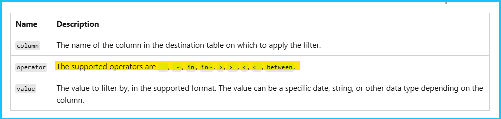
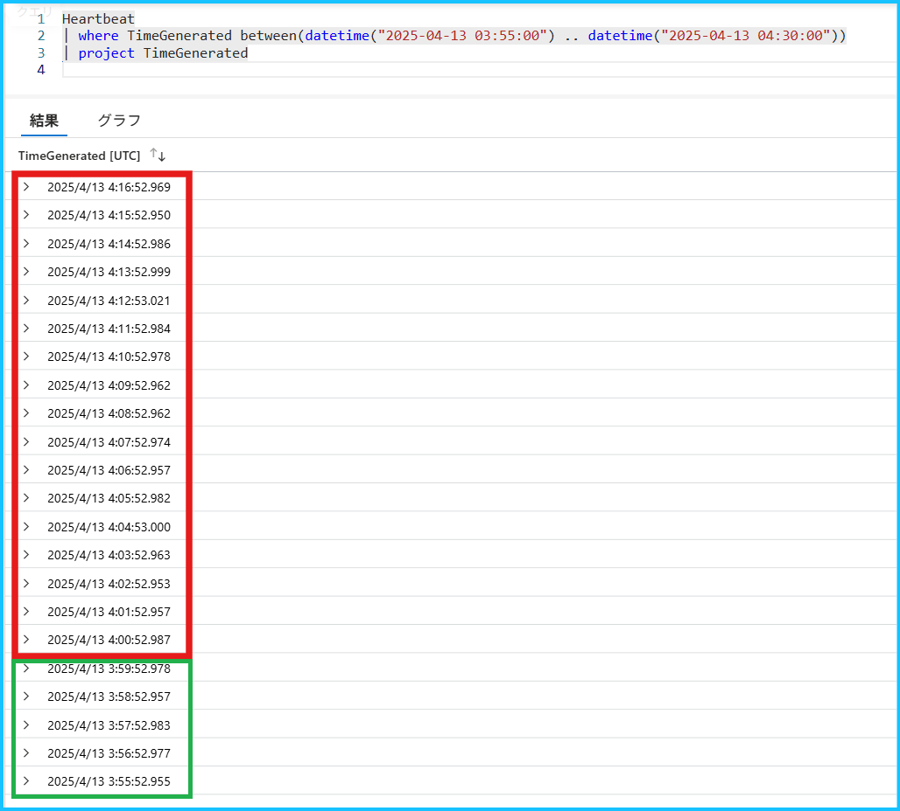
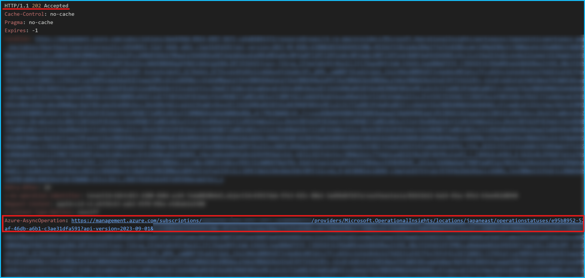
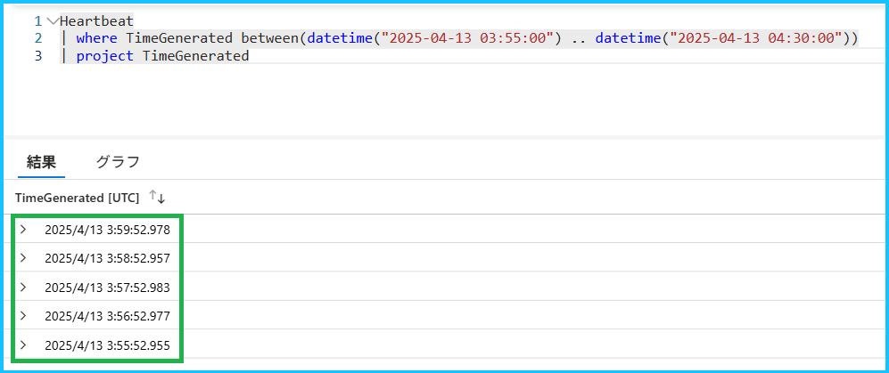
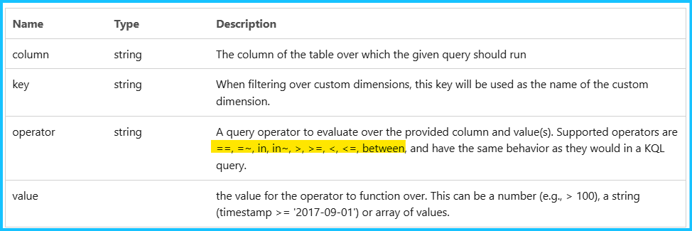
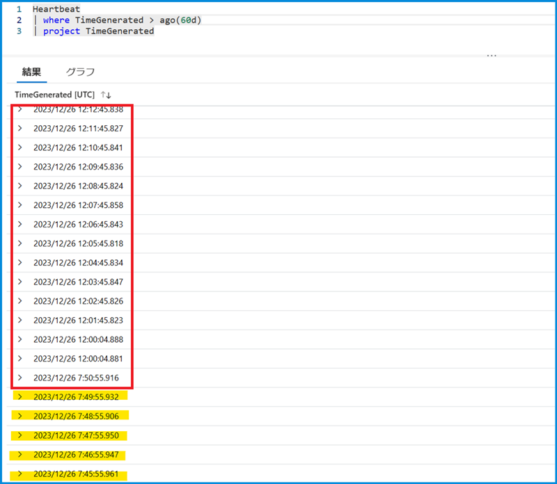
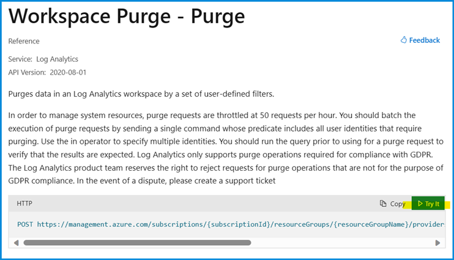
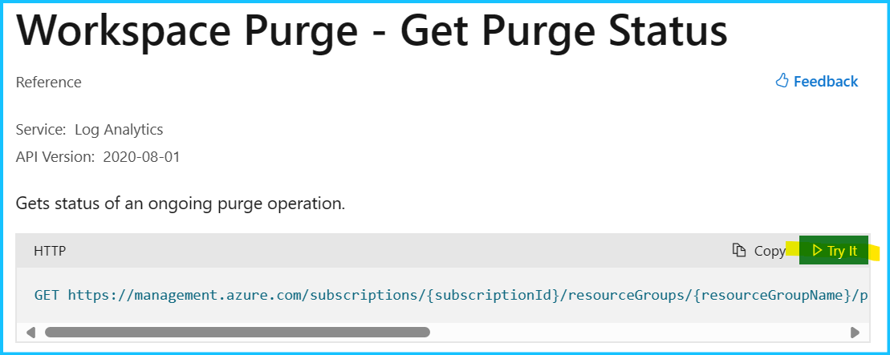
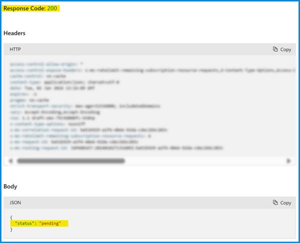
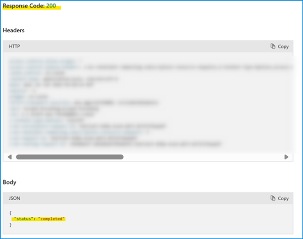

[更新履歴]
- 2024/01/06 : ブログ公開
- 2025/05/07 : Delete Data API の情報を追記
こんにちは、Azure Monitoring サポート チームの北村です。
今回は、Log Analytics ワークスペースのデータを削除する方法をご紹介します。
Log Analytics ワークスペースでは指定した保持期間を超えると、自動的にログが削除されます。
一方で、この保持期間を迎える前にログを削除したい、特定のログのみを削除したい、といった場合には、今回紹介する方法でデータを削除することをご検討いただけますと幸いです。
目次
- 1. Log Analytics ワークスペースのログを削除する方法は 2 つある
- 2. Delete Data API と Purge API の使い分けについて
- 3. Delete Data API について
- 4. Purge API について
1. Log Analytics ワークスペースのログを削除する方法は 2 つある
Log Analytics ワークスペースのログは REST API で削除することができます (Azure ポータルからログを削除することはできません)。以前から提供されていた Purge API に加え、2025/3 に Delete Data API が一般公開されました。この 2 つの API の違いについて説明します。
1-1. Purge API
Purge API は以前から提供されていた API であり、 GDPR（EU 一般データ保護規則）に準拠しています。
この API は Log Analyticsワークスペース内のデータを完全に削除（パージ）するための API であり、物理的にストレージからデータを削除します。
1 | POST https://management.azure.com/subscriptions/{subscriptionId}/resourceGroups/{resourceGroupName}/providers/Microsoft.OperationalInsights/workspaces/{workspaceName}/purge?api-version=2025-02-01 |
1-2. Delete Data API
Delete Data API は、2025/3 に一般公開された新しい API です。この API は GDPR（EU 一般データ保護規則）に準拠していません。
この API では、物理的にストレージからデータを削除するのではなく、指定された条件を満たすデータを削除済みとしてマークします。
1 | POST https://management.azure.com/subscriptions/{subscriptionId}/resourceGroups/{resourceGroupName}/providers/Microsoft.OperationalInsights/workspaces/{workspaceName}/tables/{tableName}/deleteData?api-version=2023-09-01 |
2. Delete Data API と Purge API の使い分けについて
GDPR（EU 一般データ保護規則）の要件に準拠する必要がある場合は Purge API をご利用ください。
それ以外の場合は、基本的に Delete Data API をご利用ください。
どちらの API も操作を元に戻すことはできません。API を実行する際には細心の注意を払って実施してください。
3. Delete Data API について
GDPR（EU 一般データ保護規則）の要件を満たす必要がない場合には、Delete Data API をご利用ください。
このセクションでは、Delete Data API の実行例と主な留意点をご紹介します。
3-1. Delete Data API の主な留意点
Delete Data API を実行いただく上での主な留意点をご紹介します。API を実行する前に、こちらの公開情報もご一読いただきますようお願いいたします。
- 必要なロール :
Delete Data API を実行するには Log Analytics ワークスペースに対して Microsoft.OperationalInsights/workspaces/tables/deleteData/action の権限が必要です。Log Analytics の組み込みロールでは Log Analytics 共同作成者 が該当します。
- 利用可能な演算子 :
カラム名とその値を指定して条件を指定します。値を指定する際に利用できる演算子は以下のとおりです。
すべての演算子をサポートしておりませんので、API を実行する前にサポートしている演算子をご確認ください。
- データが削除されるまでにかかる時間 :
Delete Data API のリクエストは非同期で行われ、通常は数分以内に完了しますが、最大 5 日かかる場合がございます。
データの削除ステータスは、REST API からご確認いただけます。
- 削除操作は元に戻すことはできない :
削除操作は元に戻すことはできません。API を実行する際には細心の注意を払って実施してください。
3-2. Delete Data API の実行例
3-2-1. Delete Data API でログを削除する
Delete Data API で Heartbeat のログを削除した例を紹介します。
このワークスペースには TimeGenerated が 2025/04/13 03:55:52 UTC ～ 2025/04/13 04:16:52 UTC の Heartbeat が存在しますが、TimeGenerated が 2025/04/13 04:00:00 UTC より後のログを削除します。
以下は Heartbeat テーブルを検索した実行結果の一部抜粋です。2025/04/13 04:00:00 UTC より後のログを削除するため、赤線で囲んだ部分のログが削除され、緑線で囲んだ部分のログは削除されずに残ります。
※ ログの TimeGenerated の値は UTC 時刻であることに注意してください。

それでは API の実行例を示します。
今回は TimeGenerated が 2025/04/13 04:00:00 UTC より後の Heartbeat を削除したいので、以下のように指定します。
1 | POST https://management.azure.com/subscriptions/{subscriptionId}/resourceGroups/{resourceGroupName}/providers/Microsoft.OperationalInsights/workspaces/{workspaceName}/tables/Heartbeat/deleteData?api-version=2023-09-01 |
API を実行した結果の一部抜粋です。HTTP Response Code: 202 と表示されることを確認します。赤線部分で囲んだ URL は、ステータスを確認するために必要となります。

3-2-2. Delete Data API による削除ステータスを確認する
削除のステータスは、Delete Data API を実行したときのレスポンスヘッダーに含まれる Azure-AsyncOperation URL を使用します。
1 | Azure-AsyncOperation : https://management.azure.com/subscriptions/{subscriptionId}/providers/Microsoft.OperationalInsights/locations/{region}/operationstatuses/{responseOperation}?api-version=2023-09-01 |
Azure-AsyncOperation URL に GET リクエストを送信することで、削除のステータスや削除されたレコード数が表示されます。
1 | GET https://management.azure.com/subscriptions/{subscriptionId}/providers/Microsoft.OperationalInsights/locations/{region}/operationstatuses/{responseOperation}?api-version=2023-09-01 |
操作が完了している場合には、以下のような結果を取得できます。RecordCount が 17 となっており、17 件のレコードが削除されたことが分かります。
1 | { |
3-2-3. Delete Data API によってログが削除されたかどうかを確認する
ログが削除されているかどうかを確認します。下図は Delete Data API を実行する前に確認したクエリを改めて実行した結果です。
API を実行する前には TimeGenerated が 2025/04/13 03:55:52 UTC ～ 2025/04/13 04:16:52 UTC のレコードが存在していましたが、2025/04/13 04:00:00 UTC より後のログを削除したため、2025/04/13 04:00:52 UTC ～ 2025/04/13 04:16:52 UTC (17 件) が表示されないことが分かります。

4. Purge API について
GDPR（EU 一般データ保護規則）の要件を満たす必要がある場合には、Purge API をご利用ください。
このセクションでは、Purge API の実行例と主な留意点をご紹介します。
4-1. Purge API の主な留意点
Purge API を実行いただく上での主な留意点をご紹介します。API を実行する前に、こちらの公開情報もご一読いただきますようお願いいたします。
必要なロール :
Purge の REST API を実行するには Log Analytics ワークスペースに対して Microsoft.OperationalInsights/workspaces/purge/action の権限が必要です。Log Analytics の組み込みロールでは Data Purger (データ消去者) が該当します。利用可能な演算子 :

カラム名とその値を指定して条件を指定します。値を指定する際に利用できる演算子は以下のとおりです。すべての演算子をサポートしておりませんので、API を実行する前にサポートしている演算子をご確認ください。データがパージされるまでにかかる時間 :
Purge API のリクエストは基本的に数分 ～ 数時間で反映されますが、最大 30 日かかる場合がございます。
データがパージされたかどうかを確認する場合は、Log Analytics ワークスペース上でクエリを実行してください。パージ操作は元に戻すことはできない :
パージの操作は元に戻すことはできません。パージの操作を実行する際には細心の注意を払って実施してください。
4-2. Purge API の実行例
4-2-1. Purge API でログをパージする
Purge API で Heartbeat のログを削除した例を紹介します。
このワークスペースには TimeGenerated が 2023/12/26 07:45:55 UTC ～ 2023/12/26 12:12:45 UTC の Heartbeat が存在しますが、TimeGenerated が 2023/12/26 07:50:00 UTC より後のログを削除します。
以下は Heartbeat テーブルを検索した実行結果の一部抜粋です。2023/12/26 07:50:00 UTC より後のログを削除するため、赤線で囲んだ部分のログが削除され、黄色でマーカーした部分のログは削除されずに残ります。
※ TimeGenerated の値は UTC 時刻であることに注意してください。

それでは API の実行手順をご紹介します。まず、こちらのサイトにアクセスし、”Try It” を選択します。

“Try It” をクリックすると、以下のような画面に遷移します。
Parameters (赤線で囲った部分) では、対象のワークスペースが存在するサブスクリプション、リソース グループ、ワークスペースの名前を指定します。Body (黄色線で囲った部分) では、削除するログのテーブル名と、カラム名とその値を指定します。
今回は TimeGenerated が 2023/12/26 07:50:00 UTC より後の Heartbeat を削除したいので、Body 部分の table で Heartbeat、column で TimeGenerated を指定します。こちらのサイトにもサンプル リクエストが掲載されておりますので、ご確認ください。
1 | { |
画面下部の “Run” をクリックして、Purge API を実行します。
以下のように HTTP Response Code: 202 と表示されることを確認します。マーカー部分の “operationId” は、パージ操作の受付状態を確認する際に必要となります。
4-2-2. Get Purge Status API でパージの受付状態を確認する
パージ操作の受付状態は Get Purge Status という REST API で確認することができます。
この API を実行するためには、purgeId が必要です。purgeId とは、Purge API を実行した際に表示された “operationId” の値が該当します。このため、パージ操作の受付状態を確認する場合は、必ず “operationId” をメモしていただきますようお願いいたします。
また、Get Purge Status API で completed が返された場合には、パージ操作が受付されたことを意味しますが、パージ操作が受付されてからデータが削除されるまでに最大 30 日かかる場合がありますので、ご了承ください。
1 | GET https://management.azure.com/subscriptions/{subscriptionId}/resourceGroups/{resourceGroupName}/providers/Microsoft.OperationalInsights/workspaces/{workspaceName}/operations/{purgeId}?api-version=2020-08-01 |
こちらのサイトにアクセスし、”Try It” を選択します。

Parameters では、Purge API を実行した際に表示された “operationId” と、対象のワークスペースが存在するサブスクリプション、リソース グループ、ワークスペースの名前を指定します。
API を実行すると status が表示されます。パージ操作の受付が完了していない場合は pending が返されます。

パージ操作が受付された場合は completed が返されます。

4-2-3. Purge API によってログがパージされたかどうかを確認する
Purge API によってデータがパージされたかどうかを確認する場合は、Log Analytics ワークスペース上でクエリを実行いただく必要がございます。時間の範囲や列名等で条件句をご指定いただき、対象のログが削除されたかどうかをご確認ください。
下図は Purge API を実行する前に確認したクエリを改めて実行した結果です。
API を実行する前には TimeGenerated が 2023/12/26 07:45:55 UTC ～ 2023/12/27 12:12:45 UTC のレコードが存在していましたが、
2023/12/26 07:50:00 UTC より後のログを削除したため、2023/12/26 07:50:55 UTC ～ 2023/12/26 12:12:45 UTC が表示されないことが分かります。
上記の内容以外でご不明な点や疑問点などございましたら、弊社サポート サービスまでお問い合わせください。
最後までお読みいただきありがとうございました！
※本情報の内容（添付文書、リンク先などを含む）は、作成日時点でのものであり、予告なく変更される場合があります。